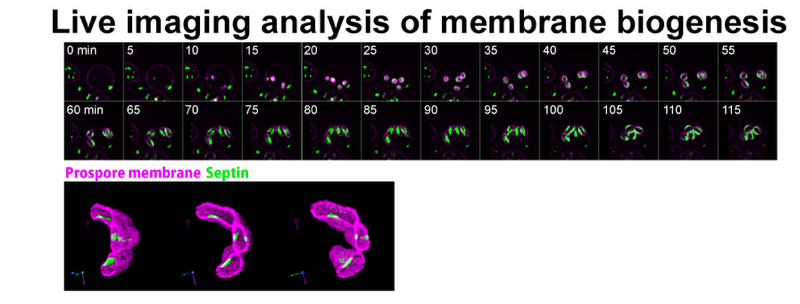

Theme 1
Membrane biogenesisHow is the prospore membrane born?
How is a new membrane that envelops the next generation built from nothing?
During meiosis, budding yeast builds a new membrane inside the mother cell, the prospore membrane, which engulfs the nuclei and cytoplasm to form four spores. It is a specialized membrane made from scratch by the fusion of vesicles delivered by the secretory pathway.
We combine live-cell imaging and genetics to follow how the prospore membrane extends and takes shape. We have reported that the secretory pathway is remodeled in coordination with prospore membrane formation, and that Rab GTPases and the lipid PI4P are important for membrane formation and extension.
- Suda Y, Neiman AM (2025) J Fungi 11: 661
- Suda Y et al. (2024) iScience 27: 110855
- Nakamura TS, Suda Y et al. (2021) PLoS Genet 17: e1009727
- Suda Y et al. (2018) FEMS Yeast Res 18: fox095
